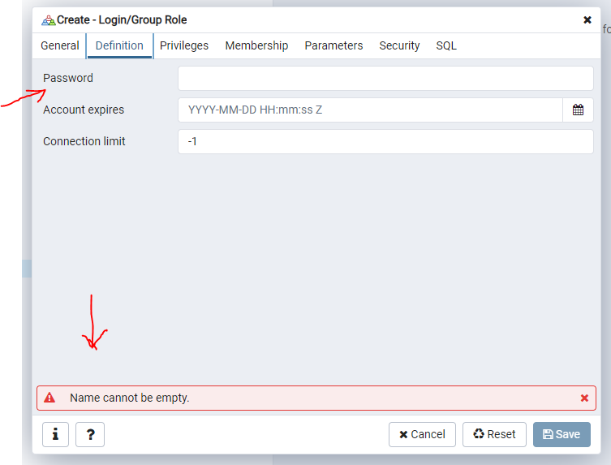
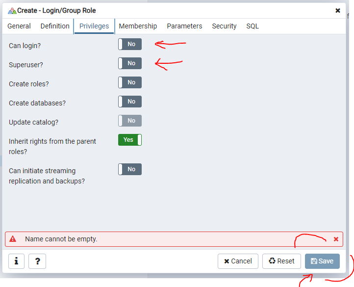

2. Get Started¶
2.1. Python Installation¶
Before use app localy you must install python 3 according to your system requirement.
- Example:
If you have windows installed and it 32 bit you must install python 3 32 bits version (Same method if you have 64 bits version)
If you have Mac you probably have python installed, if not choose mac os python 3 version
Same if you have Linux
Now to get download python build visit: http://www.python.org/download/ and check with your system os correspondance
When terminate download install and take care to check add parameter of installation directory to your system PATH
If all done, Open your console and set:
> python
You will get something like this:
Python 3.7.8 (tags/v3.7.8:4b47a5b6ba, Jun 28 2020, 08:53:46) [MSC v.1916 64 bit (AMD64)] on win32
Type "help", "copyright", "credits" or "license" for more information.
>>> _
It’s all python is installed now correctly, but if you get an error message make a post in stackoverflow forum and you get very fast answer.
2.2. PostgresSql Installation¶
Now python is install, you must install postgresSql similary to python according to your system requirement. To do it browse this and select your according package: https://www.enterprisedb.com/downloads/postgres-postgresql-downloads
2.3. Create User and Database¶
Now we have python and postgres installed we must create Database manualy and user of this database(It called role)
The most efficiently tool have postgres is pgadmin-browser with it we are going fast.
To open pgadmin into your Windows start menu(If you use windows) and select postgres after pgadmin
When open into your browser first select option: Login/Group Roles Like image bellow:
{kind=link}
Now you must fill field like this:
name: vtcuser
Select definition tab into pgadmin
{kind=link}
and fill field password like so:
password: vtcpass
Last tab select privileges like image:
{kind=link}
Check case Can login ? and Superuser
Now the final peace into postgres is to create our database to make it really simple
Select first database option push your right click and select create
New windows appear, first thing to do is to filled field like so:
database: vtcdb
Owner Select vtcuser
{kind=link}
It’all ! Click to save
We have python install and database next the last peace.
2.4. Run vtcvlp app¶
Open vtcvlp directory inside your console like this:
C:\Users\personal\ cd vtcvlp
If our first time to run app, we need to add requirements library
To do it we must run command
Open vtcvlp directory inside your console like this:
C:\Users\personal\ pip install -r requirements.txt
Secondly we need to populate our database for do it
Run command python manage.py migrate like this:
C:\Users\personal\vtcvlp\ python manage.py migrate
Finally
Run command python manage.py runserver like this:
C:\Users\personal\vtcvlp\ python manage.py runserver
Now to use app we browse it with every browser inside it, in url place we set:
localhost:8000
Now we can use it.